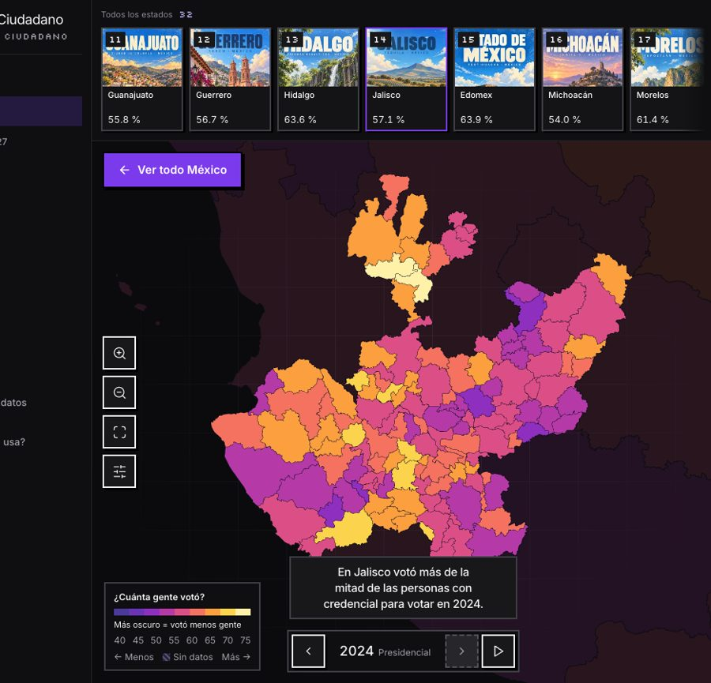
01
El mapa vivo
- 32 estados, 6 regiones y casi 2,500 municipios.
- 6 elecciones, de 2009 a 2024, con botón que las reproduce.
- Filtros combinables por sexo y edad; buscador.
Aporta: cada persona encuentra su lugar en el mapa.
Comunicación y visualización con impacto público
Un mapa, 32 cartas, un recorrido narrado y un juego para entender quién vota en México y quién falta, rumbo a la elección intermedia de 2027.
¿Cómo traducir los datos de participación en mensajes comprensibles para la ciudadanía?
Con varias puertas de entrada al mismo dato verificado: quien tiene dos minutos sigue la historia, quien tiene curiosidad explora el mapa y quien aprende jugando juega. Todos terminan sabiendo quién vota y quién falta.
| Criterio de evaluación | Cómo lo cumple Atlas ciudadano | Sección |
|---|---|---|
| Apego a la temática | Participación ciudadana con los Conteos Censales oficiales del INE, por estado, municipio, sexo, edad y elección (2009–2024). | 1 y 2 |
| Claridad y solidez | Una métrica protagonista, frases como “6 de cada 10”, cifras que cuadran con la Tabla General del INE y metodología visible. | 1 y nota |
| Originalidad y creatividad | Mascota narradora, cartas coleccionables por estado, juego de predicción y comparación personal. | 3 |
| Viabilidad institucional | Sitio estático sin servidor ni base de datos; el INE lo publica tal cual y lo actualiza con cada CCPC. | 6 |
| Potencial de aplicación | Señala grupos y territorios prioritarios para 2027 y llega a ellos con un plan de difusión medible. | 4 y 5 |
El promedio nacional esconde tres historias: territorio, sexo y edad. Las contamos en siete pasos, narrados por Pixel, nuestra mascota en pixel art, mientras el mapa vuela al lugar del que habla. Cada paso deja una sola cifra en la memoria.
El gancho: el número que todos creen conocer, convertido en 10 siluetas.
El estado pesa. En la intermedia de 2021, en Baja California solo votó el 28.3 % de los jóvenes.
La brecha más grande entre presidenciales (8.3 en 2012). Va de 6.0 puntos en Chihuahua a 12.5 en Guanajuato.
Entre jóvenes (49.1 %) y personas de 60 o más (71.4 %) hay 22.3 puntos.
2009: 44.1 % · 2015: 47.1 % · 2021: 51.8 %, contra 62.1 %, 62.4 % y 59.7 % en presidenciales. Cada intermedia superó a la anterior.
En los municipios con menos de 10 mil personas en la lista se vota más que en los de más de 75 mil.
En 2021 votó el 42.0 % de los jóvenes y el 63.2 % de las personas de 60 o más. Escenario hipotético: si votaran como sus abuelos.
| Público | Qué necesita | Por dónde entra |
|---|---|---|
| Jóvenes de 18 a 29 años (principal) | Verse reflejados sin sermón, en el celular | Misión 2027, Tu dato y su carta para compartir |
| Ciudadanía en general | Entender su estado y su municipio | El mapa y el recorrido de Pixel |
| Docentes de civismo | Material real, listo para clase | Modo presentación, juego en equipos y datos en CSV |
| Periodistas y organizaciones | Cifras trazables | Fichas por lugar, descarga de datos y metodología |
| Áreas del INE | Dónde enfocar esfuerzos | Brechas por territorio, sexo y edad |
No es un tablero más. Son seis piezas que se refuerzan entre sí, todas sobre los mismos datos y pensadas primero para el celular.

Aporta: cada persona encuentra su lugar en el mapa.
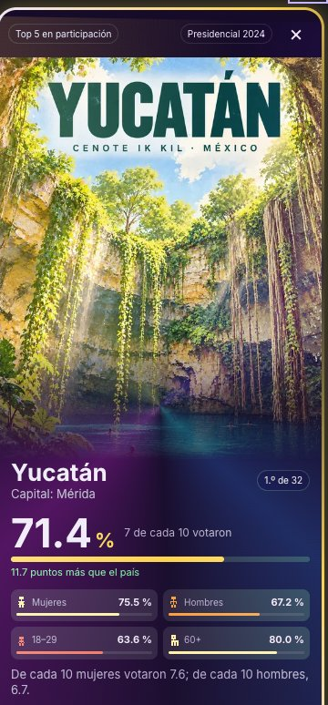
Aporta: una tabla de 32 filas se vuelve algo que se colecciona.
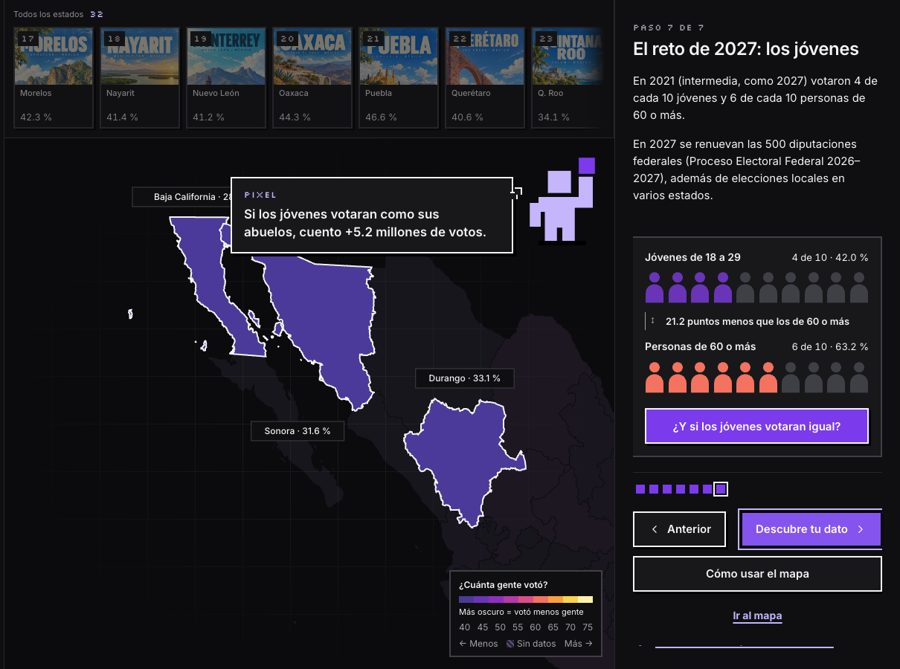
Aporta: la idea completa en dos minutos.
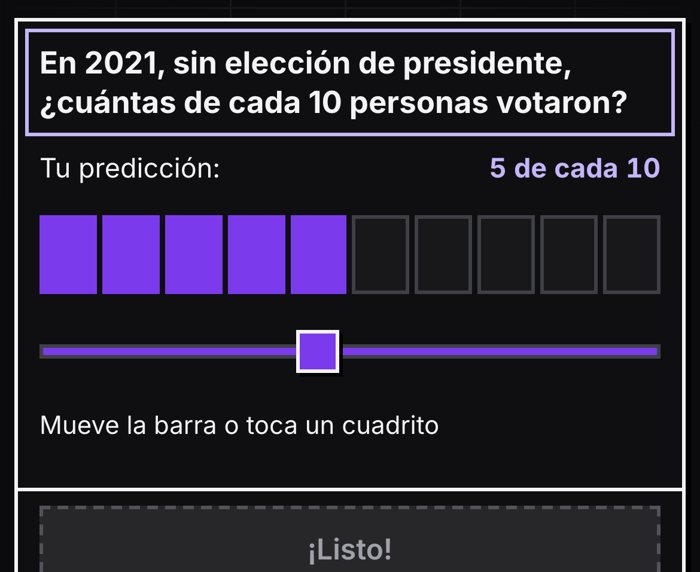
Aporta: adivinar antes de ver hace que el dato se recuerde.
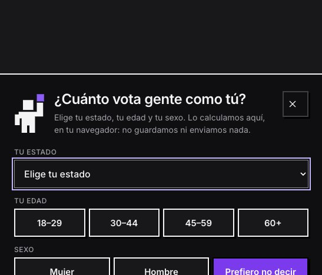
Aporta: el dato deja de ser ajeno: “En 2027 cuento yo”.
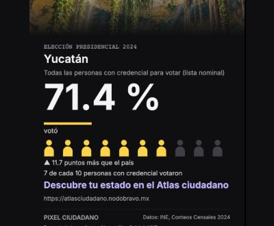
Aporta: el dato sale del sitio y llega a redes y aulas.
Pensado para el celular. Mapa a pantalla completa, ficha que se desliza con el dedo, flechas para pasar de un estado a otro y botones siempre visibles. Navegación con teclado, contraste AA y respeto a quien prefiere menos movimiento.
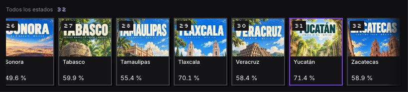
Un dato propio (mi estado, mi edad, mi carta) se comparte más que una campaña genérica. Cada pieza lleva al sitio, y el sitio devuelve una imagen lista para redes.
| Canal | Pieza del Atlas | Público | Ejemplo de mensaje |
|---|---|---|---|
| TikTok, Reels y Shorts | Video corto con Pixel y el mapa | 18–29 años | “En tu estado ellas votan más que ellos. ¿Y tú?” |
| Redes del INE y juntas locales | Carta del estado | Ciudadanía | “Esta es la carta de Yucatán: 71.4 %. ¿Y la de tu estado?” |
| Reto en redes | Misión 2027 + carta desbloqueada | Jóvenes | “Saqué 4 de 5. ¿Le ganas a mi carta?” |
| Escuelas | Recorrido en modo presentación y juego | Docentes y estudiantes | “Compara tu estado con el país.” |
| Módulos de credencialización | Cartel con QR a Tu dato | Quien tramita su credencial | “¿Cuánto vota la gente como tú?” |
| Prensa y radio comunitaria | Ficha del estado y CSV | Medios locales e indígenas | Brechas por sexo y edad de su estado |
No prometemos que un mapa suba la participación: medimos si la gente entiende el dato, lo usa y lo comparte.
Cada ficha descarga los datos de sus municipios en CSV para que las juntas locales prioricen su territorio.
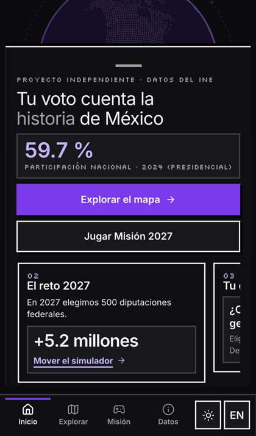
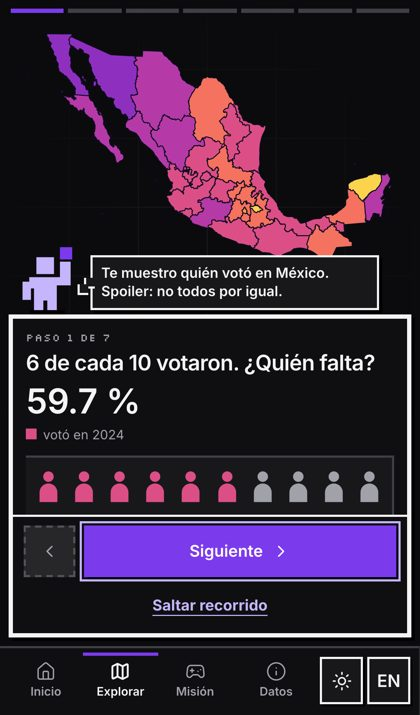
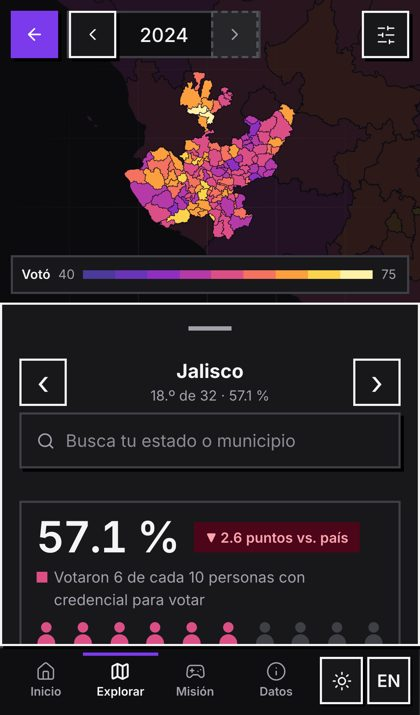
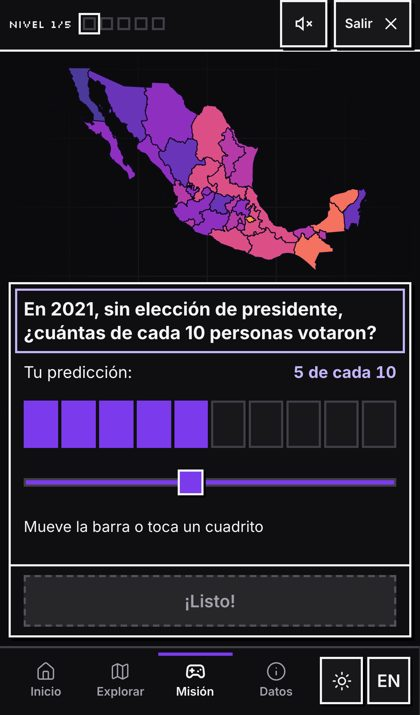
Fuente. INE, Conteos Censales de Participación Ciudadana de las elecciones federales de 2009, 2012, 2015, 2018, 2021 y 2024. Geometrías de estados y municipios: INEGI.
Cálculo. Participación = personas que votaron ÷ (lista nominal − registros sin sexo o edad especificados), por estado, municipio, sexo y edad (18–29, 30–44, 45–59, 60+). Las cifras nacionales suman las 32 entidades. Las diferencias en puntos se calculan con valores redondeados a un decimal.
Validación. Los archivos usados tienen la misma huella SHA-256 que los publicados por el INE, y las cifras estatales de 2024 coinciden con la Tabla General de los Conteos Censales.
Limitaciones. No incluye casillas especiales ni voto desde el extranjero, por lo que puede diferir de los cómputos oficiales. Se mide sobre la lista nominal, no sobre la población total. Se ocultan los municipios con menos de 100 registros en un grupo. El escenario de 2027 es hipotético y el análisis es descriptivo, no causal.
Transparencia. Las ilustraciones de las cartas se generaron con IA para el proyecto, como se indica en el sitio. Atlas ciudadano es un proyecto independiente, no un sitio oficial del INE.
Si sabes quién falta, sabes dónde empezar.
atlasciudadano.nodobravo.mx